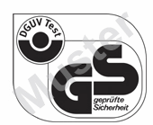

Das GS-Zeichen dokumentiert, dass die gekennzeichneten technischen Arbeitsmittel sicherheitsgerecht sind. Mit dem GS-Zeichen lassen sich behördliche Beanstandungen, Auflagen oder nachträgliche Änderungen vermeiden. Beim Kauf technischer Arbeitsmittel sollte deshalb auf das GS-Zeichen geachtet werden.
Mit dem Einkaufsführer Geprüfte Produkte können Sie sich alle durch DGUV Test geprüften Produkte, für die ein gültiges Zertifikat vorliegt, anzeigen lassen.
http://www.dguv.de/dguv-test/produkte